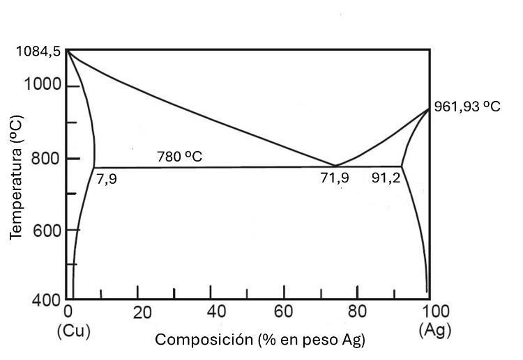
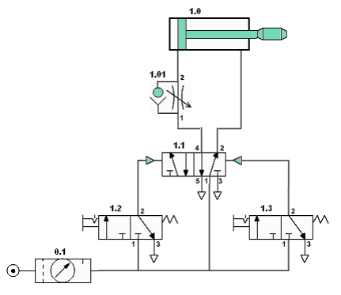
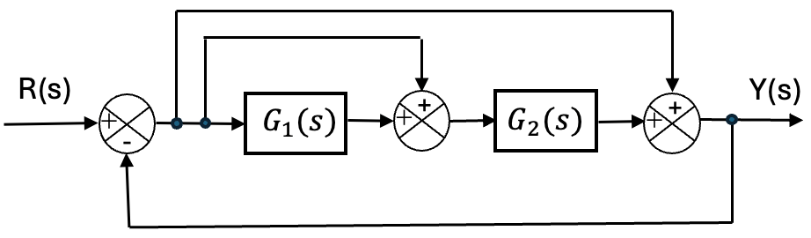

PAU 2026 · Tecnología e Ingeniería II · Castilla y León · Ordinaria
El examen consta de cuatro apartados obligatorios. El primero tiene una única pregunta; en los tres siguientes se elige una de las dos preguntas propuestas. Aquí se resuelven todas para repasar. Selecciona un apartado o una pregunta en la barra lateral. Cada una incluye el enunciado oficial, una introducción con los conceptos que se aplican y la solución paso a paso.
Apartado 1 · Diagramas de equilibrio
Reacción eutectoide y diagrama de fases Cu-Ag: fases, enfriamiento eutéctico y regla de la palanca.
Apartado 2 · Estructuras / Máquinas térmicas
Opción A: viga en voladizo con carga distribuida (reacciones, cortante y flector). Opción B: bomba de calor y motor alternativo.
Apartado 3 · Neumática / Corriente alterna
Opción A: instalación neumática con cilindro de doble efecto y válvulas. Opción B: circuito R-L en paralelo en corriente alterna.
Apartado 4 · Electrónica digital / Control
Opción A: suma binaria y contador de entradas activas (Karnaugh). Opción B: ciberseguridad, lazos de control y función de transferencia.
📄 Enunciado
Cuestión. ¿Qué es una reacción eutectoide? (0,5 ptos)
Problema. Dado el siguiente diagrama de fases correspondiente a una aleación cobre-plata:
- Dibujar un esquema del diagrama de fases y, sobre él, indicar las fases presentes en las regiones del diagrama. ¿Cuál es la temperatura de fusión de los metales puros Cu y Ag? (0,5 ptos.)
- Describir el proceso de enfriamiento de una aleación con composición eutéctica al descender la temperatura desde 900 ºC hasta 600 ºC, indicando las transformaciones de fase que tienen lugar. (0,5 ptos.)
- Para una aleación con una composición del 50 % de Ag a una temperatura de 781 ºC, determinar las fases presentes, la composición de cada una de las fases y la cantidad de cada fase. Utilizar las composiciones indicadas en la gráfica. (1 pto.)

💡 ¿Qué vamos a aplicar?
- Reacción eutéctica: a temperatura constante, un líquido se transforma al enfriar en dos sólidos: \(L \rightarrow \alpha+\beta\).
- Reacción eutectoide: lo mismo pero partiendo de un sólido: \(\gamma \rightarrow \alpha+\beta\).
- Regla de la palanca (fracción de cada fase en una región bifásica), con \(C_0\) la composición global y \(C_\alpha,\,C_L\) los extremos de la isoterma (línea de reparto).
Cuestión · Reacción eutectoide
Una reacción eutectoide es una transformación de fase invariante (ocurre a temperatura constante) en la que, al enfriar, una única fase sólida se transforma simultáneamente en dos fases sólidas distintas:
Es análoga a la eutéctica, pero partiendo de un sólido en lugar de un líquido. El ejemplo clásico es el acero: la austenita se transforma en ferrita + cementita (perlita) a 727 ºC.
a) Esquema, fases y temperaturas de fusión
El diagrama Cu-Ag es un eutéctico simple con dos disoluciones sólidas de solubilidad limitada: \(\alpha\) (rica en Cu) y \(\beta\) (rica en Ag). Las regiones son:
- L — líquido (parte superior).
- \(\alpha\) — disolución sólida rica en Cu (extremo izquierdo).
- \(\beta\) — disolución sólida rica en Ag (extremo derecho).
- \(\alpha+L\) y \(\beta+L\) — regiones bifásicas sólido + líquido.
- \(\alpha+\beta\) — región bifásica sólida (por debajo de la isoterma de 780 ºC).
Las temperaturas de fusión de los metales puros son los extremos de las líneas de líquido:
b) Enfriamiento de la composición eutéctica (71,9 % Ag) de 900 ºC a 600 ºC
- 900 ºC: la aleación está totalmente líquida (L, 71,9 % Ag).
- De 900 ºC a 780 ºC: se enfría el líquido sin cambio de fase (sigue siendo 100 % L).
- 780 ºC (temperatura eutéctica): ocurre la reacción eutéctica isoterma, en la que todo el líquido se transforma de golpe en las dos fases sólidas:$$L\,(71{,}9\%)\;\rightarrow\;\alpha\,(7{,}9\%\,\mathrm{Ag})+\beta\,(91{,}2\%\,\mathrm{Ag})$$Se forma la característica microestructura eutéctica (láminas alternas de \(\alpha\) y \(\beta\)).
- De 780 ºC a 600 ºC: la aleación permanece como mezcla sólida \(\alpha+\beta\). Las composiciones de \(\alpha\) y \(\beta\) varían ligeramente siguiendo las líneas solvus (\(\alpha\) va perdiendo Ag y \(\beta\) va perdiendo Cu).
c) Aleación 50 % Ag a 781 ºC — regla de la palanca
A 781 ºC (justo por encima de la isoterma eutéctica de 780 ºC), la vertical del 50 % de Ag cae en la región bifásica \(\alpha+L\). La línea de reparto a esa temperatura tiene por extremos:
- fase \(\alpha\): \(C_\alpha = 7{,}9\%\ \mathrm{Ag}\)
- fase líquida L: \(C_L = 71{,}9\%\ \mathrm{Ag}\)
Fases presentes: sólido \(\alpha\) y líquido L. Aplicamos la regla de la palanca con \(C_0=50\%\):
📄 Enunciado
La viga que se muestra en la figura tiene aplicada la fuerza distribuida como se indica (empotramiento en A, extremo B libre; \(W=5.000\ \mathrm{N/m}\), longitud 10 m).
- Calcular las reacciones en los apoyos. (0,5 ptos.)
- Calcular los esfuerzos cortantes y momentos flectores. (1,25 ptos.)
- Representar los diagramas de los esfuerzos cortantes y momentos flectores. (0,75 ptos.)
💡 ¿Qué vamos a aplicar?
- Es una viga en voladizo (empotrada en A, libre en B). El empotramiento aporta una reacción vertical \(R_A\) y un momento de empotramiento \(M_A\).
- La carga distribuida uniforme equivale a una resultante \(R=W\cdot L\) aplicada en el centro de la viga.
- Equilibrio: \(\sum F_y=0\) y \(\sum M=0\).
- Esfuerzo cortante \(V(x)\) y momento flector \(M(x)\) por tramos; se cumple \(\dfrac{dM}{dx}=V\).
a) Reacciones en el empotramiento
Resultante de la carga distribuida:
aplicada en el centro de la viga (a 5 m de A). Equilibrio de fuerzas verticales y de momentos respecto de A:
b) Esfuerzos cortantes y momentos flectores
Tomamos una sección a una distancia \(x\) medida desde el extremo libre B (así no interviene el empotramiento). La porción a la derecha soporta la carga \(W\cdot x\):
Valores en los extremos:
| Sección | Cortante \(V\) | Momento flector \(M\) |
|---|---|---|
| B (extremo libre, \(x=0\)) | 0 | 0 |
| Centro (\(x=5\) m) | 25 kN | −62,5 kN·m |
| A (empotramiento, \(x=10\) m) | 50 kN | −250 kN·m |
El cortante varía de forma lineal (de 0 en B a 50 kN en A) y el momento flector de forma parabólica (de 0 en B a −250 kN·m en A). El signo negativo indica flexión con las fibras superiores traccionadas (momento de empotramiento).
c) Diagramas de esfuerzos
📄 Enunciado
Cuestión. Explicar el funcionamiento de una bomba de calor, describir sus componentes y escribir la fórmula de la eficiencia. (0,75 ptos.)
Problema. Un motor alternativo de 4 cilindros genera un par máximo de \(M_{\max}=300\ \mathrm{N\cdot m}\) cuando gira a \(n=3750\ \mathrm{rpm}\). El diámetro de cada cilindro es de 80 mm, la carrera es de 92 mm y el volumen de la cámara de combustión de cada cilindro es de 58,5 cm³. Calcular:
- La cilindrada total del motor. (0,5 ptos.)
- La potencia desarrollada por el motor operando en par máximo. (0,5 ptos.)
- La relación volumétrica de compresión. (0,75 ptos.)
💡 ¿Qué vamos a aplicar?
- Cilindrada unitaria: \(V_u=\dfrac{\pi}{4}D^2\cdot S\); total: \(V_T=z\cdot V_u\) (z = nº de cilindros).
- Potencia a partir del par: \(P=M\cdot\omega\), con \(\omega=\dfrac{2\pi n}{60}\).
- Relación de compresión: \(r=\dfrac{V_u+V_c}{V_c}\) (volumen total del cilindro entre volumen de la cámara).
Cuestión · La bomba de calor
Una bomba de calor es una máquina térmica que, consumiendo un trabajo (energía eléctrica en el compresor), transfiere calor desde un foco frío a un foco caliente (en sentido contrario al espontáneo). Recorre el ciclo frigorífico pero aprovechando el calor cedido en el foco caliente para calefacción. Sus componentes son:
- Compresor: comprime el fluido refrigerante en estado vapor, elevando su presión y temperatura (aporta el trabajo).
- Condensador: el vapor cede calor \(Q_c\) al foco caliente (el local a calefactar) y se condensa.
- Válvula de expansión: reduce bruscamente la presión, enfriando el refrigerante.
- Evaporador: el refrigerante absorbe calor \(Q_f\) del foco frío (el exterior) y se evapora.
Su eficiencia (COP, coeficiente de desempeño) se define como el calor útil aportado al foco caliente entre el trabajo consumido:
a) Cilindrada total
Con \(D=8\ \mathrm{cm}\) y carrera \(S=9{,}2\ \mathrm{cm}\), la cilindrada unitaria:
b) Potencia en par máximo
Velocidad angular:
c) Relación volumétrica de compresión
El volumen máximo del cilindro es \(V_u+V_c\) (PMI) y el mínimo es \(V_c\) (PMS):
📄 Enunciado
En la instalación neumática de la figura:
- Identificar y describir sus componentes. (1 pto.)
- Explicar el funcionamiento. (1 pto.)
- ¿Qué ocurre si, al montar la instalación, el regulador «1.01» se conecta al revés? (0,5 ptos.)

💡 ¿Qué vamos a aplicar?
- Nomenclatura de circuitos neumáticos: 0.x = elementos de alimentación; 1.0 = actuador; 1.1 = válvula principal; 1.2/1.3 = elementos de mando (finales de carrera).
- Válvula 5/2: 5 vías, 2 posiciones; gobierna un cilindro de doble efecto.
- Regulador de caudal unidireccional (estranguladora + antirretorno): controla la velocidad del vástago dejando paso libre en un sentido y estrangulado en el otro.
a) Identificación de los componentes
- 0.1 — Grupo o unidad de acondicionamiento del aire (filtro + regulador de presión con manómetro), conectado a la fuente de aire comprimido. Prepara y regula el aire de la red.
- 1.0 — Cilindro de doble efecto: actuador lineal que sale y entra por acción del aire en ambas cámaras.
- 1.01 — Regulador de caudal unidireccional (válvula estranguladora con antirretorno): regula la velocidad del vástago.
- 1.1 — Válvula distribuidora 5/2 biestable con pilotaje neumático por ambos lados: es la válvula principal que dirige el aire a una u otra cámara del cilindro.
- 1.2 y 1.3 — Válvulas 3/2 (NC) accionadas por rodillo y con retorno por muelle: actúan como finales de carrera (detectores de posición) que envían las señales de pilotaje a la válvula 1.1.
b) Funcionamiento
Es un circuito de vaivén automático. Con el cilindro en su posición inicial, el rodillo de 1.2 está accionado y envía una señal de aire que pilota la válvula 1.1, que conmuta y da presión a la cámara posterior del cilindro 1.0: el vástago sale (avance). El regulador 1.01 estrangula el caudal y fija la velocidad de ese movimiento.
Al llegar al final del recorrido, el vástago acciona el rodillo de 1.3, que envía la señal de pilotaje al lado opuesto de 1.1. La válvula vuelve a conmutar, invierte la alimentación del cilindro y el vástago retrocede hasta accionar de nuevo 1.2, reiniciándose el ciclo. Así se mantiene el movimiento alternativo de salida y entrada.
c) Si el regulador 1.01 se conecta al revés
Un regulador de caudal unidireccional deja pasar el aire libremente en un sentido (por el antirretorno) y lo estrangula en el sentido contrario. Montado correctamente regula la velocidad en la carrera deseada (control del escape). Si se conecta al revés, el antirretorno permite el paso libre justo en el sentido que se quería controlar y estrangula el otro: la regulación de velocidad deja de funcionar en esa carrera, el cilindro se mueve a velocidad plena (sin control) y el estrangulamiento actúa sobre el movimiento equivocado. El resultado es un movimiento brusco y una regulación de velocidad inservible.
📄 Enunciado
En un circuito eléctrico se conectan en paralelo una resistencia de 1000 Ω y una bobina de 0,15 H. Si aplicamos una tensión al circuito de 230 V eficaces, con una frecuencia de 50 Hz, calcular:
- Impedancia equivalente total del circuito. (0,75 ptos.)
- Intensidades en todas las ramas del circuito. (0,75 ptos.)
- Factor de potencia. (0,25 ptos.)
- Balance de potencias: activa, reactiva y aparente. (0,75 ptos.)
💡 ¿Qué vamos a aplicar?
- Reactancia inductiva: \(X_L=2\pi f L\).
- En paralelo la tensión es común; conviene trabajar con admitancias: \(Y=\dfrac1R-\dfrac{j}{X_L}\), y \(Z=1/Y\).
- Intensidad de cada rama: \(I=V/Z_{\text{rama}}\). La de la R está en fase; la de la L retrasa 90°.
- Potencias: \(P=\dfrac{V^2}{R}\), \(Q=\dfrac{V^2}{X_L}\), \(S=\sqrt{P^2+Q^2}=V\,I\).
Datos previos · reactancia de la bobina
a) Impedancia equivalente
Al estar en paralelo sumamos admitancias:
El ángulo de la impedancia es \(\varphi=+87{,}3^\circ\) (inductivo). En forma binómica \(Z\approx 2{,}22+j\,47{,}0\ \Omega\).
b) Intensidades en las ramas
c) Factor de potencia
d) Balance de potencias
📄 Enunciado
Cuestión. Realizar la suma binaria de los números \(43_{10}\) y \(26_{10}\). (0,75 ptos.)
Problema. Un circuito consta de tres entradas y una salida de dos bits, de forma que el número binario representado en la salida es el número de entradas activadas.
- Obtener la tabla de verdad del circuito. (0,5 ptos.)
- Obtener el mapa de Karnaugh. (0,5 ptos.)
- Simplificar la o las funciones lógicas correspondientes. (0,75 ptos.)
💡 ¿Qué vamos a aplicar?
- Conversión decimal→binario por divisiones sucesivas y suma binaria bit a bit con acarreos.
- El circuito cuenta cuántas entradas valen 1 (0 a 3): la salida de 2 bits \((S_1S_0)\) es exactamente un sumador completo (full-adder).
- Karnaugh para simplificar cada salida: \(S_1\) (bit de mayor peso = mayoría) y \(S_0\) (bit de menor peso = paridad).
Cuestión · Suma binaria de 43 y 26
Conversión a binario: \(43_{10}=101011_2\) y \(26_{10}=011010_2\). Sumamos con acarreos:
Comprobación: \(1000101_2=64+4+1=69_{10}\) y \(43+26=69\). ✓
a) Tabla de verdad
Entradas A, B, C; salida \(S_1S_0\) = número de entradas a 1 (en binario):
| A | B | C | Nº de 1 | \(S_1\) | \(S_0\) |
|---|---|---|---|---|---|
| 0 | 0 | 0 | 0 | 0 | 0 |
| 0 | 0 | 1 | 1 | 0 | 1 |
| 0 | 1 | 0 | 1 | 0 | 1 |
| 0 | 1 | 1 | 2 | 1 | 0 |
| 1 | 0 | 0 | 1 | 0 | 1 |
| 1 | 0 | 1 | 2 | 1 | 0 |
| 1 | 1 | 0 | 2 | 1 | 0 |
| 1 | 1 | 1 | 3 | 1 | 1 |
b) Mapas de Karnaugh
Se hace un mapa para cada salida (filas = A; columnas = BC en código Gray):
| \(S_1\) | BC=00 | 01 | 11 | 10 |
|---|---|---|---|---|
| A=0 | 0 | 0 | 1 | 0 |
| A=1 | 0 | 1 | 1 | 1 |
| \(S_0\) | BC=00 | 01 | 11 | 10 |
|---|---|---|---|---|
| A=0 | 0 | 1 | 0 | 1 |
| A=1 | 1 | 0 | 1 | 0 |
c) Simplificación de las funciones
Salida \(S_1\) (bit de mayor peso): en el mapa se agrupan tres parejas de unos → función de mayoría:
Salida \(S_0\) (bit de menor peso): los unos forman un tablero de ajedrez, no agrupable; es la paridad (OR-exclusiva de las tres entradas):
📄 Enunciado
Cuestiones.
- Explicar cuál es la diferencia entre «spyware» y «ransomware». (0,5 ptos.)
- Un sistema de riego automático de una parcela, ¿se podría considerar un sistema de control en lazo abierto o en lazo cerrado? Justifique su respuesta. (0,5 ptos.)
Problema. Calcular la función de transferencia \(Y(s)/R(s)\) del sistema de control cuyo diagrama de bloques se muestra en la figura. (1,5 ptos.)

💡 ¿Qué vamos a aplicar?
- Lazo abierto: la señal de control no depende de la salida (no hay realimentación). Lazo cerrado: se mide la salida con un sensor y se realimenta para corregir el error.
- Para la función de transferencia: nombrar la señal a la salida de cada sumador, plantear sus ecuaciones y despejar \(Y/R\). Aquí hay dos ramas de anticipación (feedforward) que llevan la señal de error \(E\) a los dos sumadores siguientes, y una realimentación negativa unitaria de la salida.
a) Spyware frente a ransomware
- Spyware: software espía que se instala de forma oculta y recopila información del usuario (hábitos de navegación, credenciales, datos personales) enviándola a terceros sin su consentimiento. No bloquea el equipo; su objetivo es espiar y robar información pasando desapercibido.
- Ransomware: software malicioso que cifra o secuestra los datos o el sistema y exige un rescate (normalmente en criptomoneda) para liberarlos.
Diferencia: el spyware roba información de forma sigilosa; el ransomware bloquea/cifra los datos y extorsiona pidiendo un pago.
b) Riego automático: ¿lazo abierto o cerrado?
Depende de si hay realimentación:
- Si el riego funciona por tiempo/programación (por ejemplo, regar 10 minutos a una hora fija) sin comprobar el estado real del terreno, es un sistema en lazo abierto: la acción no depende de la salida.
- Si dispone de un sensor de humedad del suelo que mide la variable controlada y el sistema ajusta el riego según ese valor (regando solo cuando la humedad baja de un umbral), entonces hay realimentación y es un sistema en lazo cerrado.
Problema · Función de transferencia \(Y(s)/R(s)\)
Llamamos \(E\) a la salida del primer sumador. Por la realimentación negativa unitaria:
La señal \(E\) se lleva por anticipación a los dos sumadores siguientes (ambas entradas positivas). El segundo sumador da \(G_1E+E\), que entra en \(G_2\); el tercer sumador suma la salida de \(G_2\) y de nuevo \(E\):
Sustituyendo \(E=R-Y\):
Agrupando \(Y\) y llamando \(A=G_1G_2+G_2+1\):